本文是作者所在任务小组完成的南京师范大学计算机与电子信息学院/人工智能学院为本科
绪论
研究背景及意义
随着经济社会的不断发展, 我国人民日益提高的生活水平以及不断扩大的出行范围都促使交通运输货运
因此, 在 2023 年国家卫健委宣布新冠防控形势整体向好, 进入
为尽快恢复社会的正常运作, 大量学者和专家就新冠肺炎疫情对交通运输业产生的影响及对策进行了研究, 以期为有关交通运输管理部门或交通运输企业制定防疫策略提供参考. 但现有研究大多集中于疫情严重阶段城市交通系统受到的影响, 对后疫情阶段的研究较少. 在疫情发展已经步入后疫情阶段的背景下, 分析和研究此阶段中人们出行行为受疫情影响而产生的变化, 对恢复社会交通秩序具有更为重要的现实意义[2].
国内外研究现状
周健[3]研究了新冠肺炎疫情对我国交通运输行业的影响, 发现新冠疫情的影响超过了 SARS 疫情, 对客运冲击最大, 其次是货运, 港口运输影响最小. 但认为影响是短期的, 不会对长期趋势造成影响. 胡姬等[4]分析了新冠疫情期间国内 19 个城市的地铁客运数据, 发现疫情下地铁客运量只有正常情况的 8%左右, 地铁运营的能耗
Ekici[6]利用 2011 至 2019 年土耳其每日站间铁路客流数据, 通过区域旅行生成模型估计无疫情下 2020 年预期铁路客运流量, 并与实际观测数据对比, 指出疫情导致土耳其铁路客运量减少约 2100 万人次, 凸显了区域分析对了解旅行行为的重要性, 以及应急规划和战略投资对交通部门应对未来中断的必要性. Murat等[7]通过对 471 名参与者的调查, 研究疫情对交通行为和偏好的影响, 研究发现人们从公共交通转向私人车辆, 主要出于对卫生
总体而言, 现有研究已从不同角度
研究内容
本文将对国内新冠疫情前后交通运输数据进行研究, 重点选择将后疫情阶段与疫情前阶段的交通运输方式选择行为进行对比, 并使用季节性自回归积分滑动平均模型 (后简称 SARIMA 模型) 完成已有数据的拟合及前景预测, 以分析后疫情阶段交通运输业是否恢复至疫情前的运营水平. 各章节内容具体如下:
第一章: 绪论. 介绍本文的研究背景
第二章: 研究基础理论. 简要介绍本文研究过程所使用的 SARIMA 模型的原理
第三章: 数据处理与预测. 获取原始数据并进行清理auto_arima 函数确定 SARIMA 模型参数, 构建模型拟合历史数据, 评估拟合效果后预测前景, 通过特定数据处理进行无新冠走向预测, 以对比分析疫情影响.
研究理论基础
部分回归模型间的横向比较
线性回归模型
原理: 线性回归假设因变量和自变量之间存在线性关系. 对于交通运输数据, 存在某些线性相关的因素影响货运量, 就可以尝试用线性回归来建立模型.
形式: 简单线性回归模型的表达式为 $y=\beta_0+\beta_1x+\epsilon$. 其中 $y$ 是因变量, $x$ 是自变量, $\beta_0$ 是截距, $\beta_1$ 是斜率, $\epsilon$ 是误差项, 它包含了除 $x$ 之外的其他因素对 $y$ 的影响, 且通常假设 $\epsilon\sim\mathcal{N}(0,\sigma^2)$.
参数估计: 常用的参数估计方法是最小二乘法. 其目标是找到一组 $\hat{\beta}_0$ 和 $\hat{\beta}_1$, 使得残差平方和 $\sum_{i=1}^{n}{(y_i-\hat{y}_i)^2}$ 最小, 其中 $y_i$ 是实际观测值, $\hat{y}_i=\beta_0+\beta_1x_i$ 是预测值. 通过求偏导数并令其为 $0$, 可以得到 $\hat{\beta}_1=\frac{\sum_{i=1}^{n}{(x_i-\bar{x})(y_i-\bar{y})}}{\sum_{i=1}^{n}{(x_i-\bar{x})^2}}$ 和 $\hat{\beta}_0=\bar{y}-\hat{\beta}_1\bar{x}$, 其中 $\bar{x}$ 和 $\bar{y}$ 分别是 $x$ 和 $y$ 的样本均值.
适用性: 如果数据中的变量关系较为简单且近似线性, 线性回归可以提供一个基本的预测和分析框架. 但如果数据存在复杂的季节性
指数平滑模型
原理: 指数平滑模型通过对历史数据进行加权平均来预测未来值, 对近期数据赋予较大权重, 对远期数据赋予较小权重.
形式:
- 简单指数平滑模型: 预测公式为 $\hat{y}_{t+1}=\alpha y_t+(1-\alpha)\hat{y}_t$. 这是一个迭代公式, 在每一个时间点 $t$, 预测下一个时刻 $t+1$ 的值. 它是对当前实际观测值 $y_t$ 和上一时刻预测值 $\hat{y}_t$ 的加权平均, 权重分别为 $\alpha$ 和 $1-\alpha$.
- Holt 线性指数平滑模型: 由水平项 $l_t$ 和趋势项 $b_t$ 构成. 预测公式为 $\hat{y}_{t+h}=l_t+hb_t$, 其中 $h$ 是预测步长. 水平项更新公式为 $l_t=\alpha y_t+(1-\alpha)(l_{t-1}+b_{t-1})$, 趋势项更新公式为 $b_t=\beta(l_t-l_{t-1})+(1-\beta)b_{t-1}$, 这里 $\alpha$ 和 $\beta$ 是平滑常数.
- Holt-Winters 指数平滑模型: 在 Holt 模型的基础上又增加了对季节性因素的考虑. 设 $l_t$ 为水平项, $b_t$ 为趋势项, $s_t$ 为季节性因子, 预测公式为 $\hat{y}_{t+h}=(l_t+hb_t)s_{t+h-m}$ (当 $h>m$ 时) 或 $\hat{y}_{t+h}=(l_t+hb_t)s_{t+h}$ (当 $h\leq m$ 时), 其中 $m$ 是季节周期长度. 其更新公式涉及多个平滑常数和季节性调整, 较为复杂. 例如, 水平项更新公式为 $l_t=\alpha\frac{y_t}{s_{t-m}}+(1-\alpha)(l_{t-1}+b_{t-1})$ 等, 涉及多个平滑常数和季节性调整.
参数估计:
- 简单指数平滑模型: 平滑常数 $\alpha$ 的估计通常通过试验不同的 $\alpha$ 值 (在 $0<\alpha<1$ 范围内), 观察模型在训练数据上的性能来确定. 可以使用网格搜索等方法, 尝试一系列预定的 $\alpha$ 值, 计算相应的预测误差指标, 选择使误差最小的 $\alpha$ 值.
- Holt 线性指数平滑模型: 平滑常数 $\alpha$ 和 $\beta$ 的估计与简单指数平滑类似, 采用试验不同组合的 $\alpha$ 和 $\beta$ 值的方法. 可以通过构建一个包含多个 $\alpha$ 和 $\beta$ 组合的网格, 对每个组合在训练数据上计算预测误差指标, 然后选择使误差最小的和组合.
- Holt-Winters 指数平滑模型: 平滑常数 $\alpha$
、
适用性: 简单指数平滑模型适用于平稳时间序列, 即序列没有明显的趋势和季节性变化, 均值和方差相对稳定; Holt 线性指数平滑模型适用于有线性趋势的时间序列, 能够同时捕捉序列的水平和线性变化趋势; Holt-Winters 指数平滑模型适用于具有明显季节性和趋势的时间序列, 能够全面地处理时间序列中的水平
自回归积分滑动平均模型 (ARIMA)
原理: ARIMA 模型由自回归 (AR)
形式: 完整的 ARIMA ($p$, $d$, $q$) 模型先对原始序列进行 $d$ 阶差分使其平稳, 然后对差分后的序列建立 ARMA ($p$, $q$) 模型. 即 $\Phi(L)(1-L)^dy_t=\Theta(L)\epsilon_t$, 其中 $\Phi(L)=1-\varphi_1L-\varphi_2L^2-\cdots-\varphi_pL^p$ 是自回归算子, $\Theta(L)=1+\theta_1L+\theta_2L^2+\cdots+\theta_qL^q$ 是滑动平均算子, $\epsilon_t$ 是白噪声序列.
- 自回归 (AR) 部分: 对于一个 AR ($p$) 模型 ($p$ 为自回归阶数), 其基本形式为 $y_t=c+\varphi_1y_{t-1}+\varphi_2y_{t-2}+\cdots+\varphi_py_{t-p}+\epsilon_t$. 这里 $y_t$ 是时间序列在时刻 $t$ 的值, $c$ 是常数项, $\varphi_i$($i=1,2,\cdots,p$) 是自回归系数, 表示过去 $p$ 个时刻的序列值对当前值的影响程度, $y_{t-i}$ 是 $y_t$ 的滞后 $i$ 期的值, $\epsilon_t$ 是白噪声序列, 代表模型无法解释的随机波动.
- 滑动平均 (MA) 部分: 对于一个 MA ($q$) 模型 ($q$ 为滑动平均阶数), 表达式为 $y_t=c+\epsilon_t+\theta_1\epsilon_{t-1}+\theta_2\epsilon_{t-2}+\cdots+\theta_q\epsilon_{t-q}$. 其中 $\theta_j$($j=1,2,\cdots,q$) 是滑动平均系数, $\epsilon_{t-j}$ 是时刻 $t-j$ 的预测误差. 该部分主要通过过去的预测误差来影响当前的序列值, 用于处理序列中的短期波动.
- 差分 (I) 部分: 当原始时间序列是非平稳的时候, 需要进行差分操作使其平稳. 如果原序列 $y_t$ 经过 $d$ 阶差分后变为平稳序列 $z_t$, 则 $z_t=(1-L)^dy_t$, 其中 $L$ 是滞后算子, $L^iy_t=y_{t-i}$. 例如, 一阶差分 $z_t=y_t-y_{t-1}$. 差分操作是为了消除序列中的趋势和季节性等非平稳因素, 使得后续建立的 ARMA 模型能够更好地拟合数据.
参数估计:
- 确定差分阶数 $d$: 首先要对原始时间序列进行平稳性检验, 常用的方法是 ADF(Augmented Dickey-Fuller) 检验. 如果 ADF 检验的统计量小于相应的临界值, 则拒绝原序列非平稳的假设. 如果序列不平稳, 通过观察序列的趋势等特征初步确定差分阶数, 然后不断尝试不同的差分阶数, 对差分后的序列再次进行平稳性检验, 直到得到平稳序列, 从而确定的值. 此外, 还可以使用 KPSS(Kwiatkowski-Phillips-Schmidt-Shin; 原假设是序列是平稳的, 备择假设是序列包含单位根)
、 - 确定自回归阶数 $p$ 和滑动平均阶数 $q$: 可以通过观察自相关函数 ACF 和偏自相关函数 PACF 的图像来初步确定 $p$ 和 $q$ 的值. 例如, 若 ACF 呈现拖尾, PACF 在 $p$ 阶后截尾, 则可能是 AR ($p$) 模型; 反之, 如果 PACF 拖尾, ACF 在 $q$ 阶后截尾
， 、 、 、 、
适用性: ARIMA 模型对于平稳和非平稳时间序列均具有很强的适用性. 当时间序列呈现出趋势 (如线性增长或下降趋势) 时, ARIMA 中的差分部分可以有效处理这些非平稳特征, 通过适当阶数的差分将其转化为平稳序列, 然后在平稳序列基础上建立 ARMA 部分的模型, 从而对数据进行有效的分析和预测. 对于本身已经是平稳的时间序列, 差分阶数 $d=0$, 直接对平稳序列建立 ARMA 模型, 利用序列的自回归和滑动平均特性来拟合数据, 捕捉序列中的线性相关性和短期波动. 但对于交通运输数据这种存在显著季节性波动的数据, ARIMA 模型可能会遗漏季节性信息.
季节性自回归积分滑动平均模型 (SARIMA)
原理: SARIMA 模型是一种用于分析和预测具有季节性时间序列数据的统计模型, 在 ARIMA 模型的基础上引入对具有季节性特征的时间序列数据的处理. 其核心思想是将时间序列中的季节性因素和非季节性因素分别进行建模, 从而更准确地捕捉数据的复杂结构. 其还有扩展 SARIMAX 模型, 允许在模型中加入外生变量 (Exogenous Variables). 外生变量是模型外部的解释变量, 有助于提高模型的预测精度.
形式: 完整的 SARIMA ($p$, $d$, $q$)($P$, $D$, $Q$) $s$ 模型将非季节性部分和季节性部分结合起来, 表达式为 $\Phi(L)\Phi_s(L^s)(1-L)^d(1-L^s)^DY_t=\Theta(L)\Theta_s(L^s)\epsilon_t$. SARIMA 模型综合考虑了时间序列中的非季节性自回归
- 非季节性部分与 ARIMA 模型类似, 假设其为 ARIMA ($p$, $d$, $q$), 则数学表达式为 $\Phi(L)(1-L)^dY_t=\Theta(L)\epsilon_t$, 其中 $\Phi(L)=1-\varphi_1L-\varphi_2L^2-\cdots-\varphi_pL^p$ 是自回归算子, $\Theta(L)=1+\theta_1L+\theta_2L^2+\cdots+\theta_qL^q$ 是滑动平均算子, $\epsilon_t$ 是白噪声序列.
- 季节性部分引入季节性自回归 (SAR) 和季节性滑动平均 (SMA). 假设季节性周期为 $s$, 季节性自回归阶数为 $P$, 季节性滑动平均阶数为 $Q$, 则季节性部分的表达式为 $\Phi_s(L^s)(1-L^s)^DY_t=\Theta_s(L^s)\epsilon_t$, 其中 $\Phi_s(L^s)=1-\varphi_{s_1}L^s-\varphi_{s_2}L^{2s}-\cdots-\varphi_{s_P}L^{Ps}$ 是季节性自回归算子, $\varphi_{s_i}$ 是季节性自回归系数, $(1-L^s)^D$ 表示季节性差分, $\Theta_s(L^s)=1+\theta_{s_1}L^s+\theta_{s_2}L^{2s}+\cdots+\theta_{s_Q}L^{Qs}$ 是季节性滑动平均算子, $\theta_{s_j}$ 是季节性滑动平均系数.
参数估计:
- 确定季节性周期 $s$: 对于具有明显季节性的时间序列, 季节性周期 $s$ 通常是已知的. 例如, 对于月度数据, $s=12$; 对于季度数据, $s=4$. 如果季节性周期不明显, 可以通过观察时间序列的自相关函数 (ACF) 和偏自相关函数 (PACF) 来确定, 寻找 ACF 或 PACF 出现周期性峰值的间隔作为可能的季节性周期.
- 确定阶数 $p$, $q$, $d$, $P$, $Q$, $D$: 与 ARIMA 模型类似, 可以通过观察 ACF 和 PACF 来初步判断阶数. 对于非季节性部分, ACF 和 PACF 的拖尾和截尾情况可以帮助确定 $p$ 和 $q$; 对于季节性部分, 观察季节性 ACF 和季节性 PACF (通过对间隔为季节性周期 $s$ 的数据点计算 ACF 和 PACF 得到) 来确定 $P$ 和 $Q$. 同时, 根据序列的平稳性确定差分阶数 $d$ 和季节性差分阶数 $D$. 也可以使用信息准则来选择最优的阶数组合.
- 确定阶数后, 通常使用最大似然估计法来估计模型的参数 ($\varphi_i$
、 、 、
适用性: SARIMA 模型非常适用于处理具有明显季节性波动的时间序列数据, 数据需要具有一定的季节性特征才能充分发挥 SARIMA 模型的优势. 同时, 虽然 SARIMA 模型本身可以通过差分操作处理非平稳数据, 但如果数据的非平稳性不仅仅是由季节性和趋势导致的 (例如存在突然的结构变化或异常值), 可能需要在建模前对数据进行预处理, 如去除异常值
SARIMA 模型的优势
李锦源[8]在研究苏州市地铁 AFC 进出站刷卡的短时交通流数据集过程中使用线性回归
已有研究表明, 选择模型的标准是多维度的. 一方面, 要考虑预测精度和预测速度之间的平衡, 有些场景需要快速得到预测结果, 而有些则更侧重于高精度的预测. 另一方面, 预测效果和拟合精度也是关键因素, 需要根据具体任务是更看重对未来数据的准确预估, 还是更注重对已有数据内在结构的良好拟合来选择模型. 此外, 还需权衡单一模型和组合模型的使用, 组合模型有可能综合多种模型的优势, 但也需要考虑其构建的复杂性等因素, 最终的模型选择应当以满足特定应用场景的需求为导向. 不同的应用场景对于预测有着不同的要求, 这凸显了选择合适模型的重要性.
在国内新冠疫情前后交通运输数据分析与前景预测中, SARIMA 模型虽有局限性, 但优势使其仍具应用价值.
其优势首先体现在对季节性数据的卓越处理能力上. 交通运输领域存在诸多季节性规律, 例如旅游旺季期间, 热门旅游目的地的航空客运量
SARIMA 模型还擅长整合数据的趋势与残差信息. 疫情前后, 交通运输行业的发展并非单纯的随机波动, 而是存在着如经济发展带动下的长期增长趋势
此外, SARIMA 模型拥有成熟的理论与实践基础. 在时间序列分析领域, SARIMA 模型经过了长期的研究与大量的实践应用验证, 积累了丰富的经验与成果. 无论是在参数估计的方法上, 还是在模型诊断与优化的策略上, 都有着一套完善且成熟的体系. 在交通运输数据预测方面, 众多的研究案例和实际应用经验可供参考借鉴, 这使得在使用 SARIMA 模型进行分析预测时, 能够迅速上手并依据既有经验进行合理的模型构建与调整. 相比一些新兴的
数据处理与预测
数据采集与处理
本文使用 2005 年 1 月至 2024 年 10 月间近 20 年共 238 个月份的全国数据进行预测模型的搭建, 数据来源于国家统计局官方公示, 整理成unprocessed_data.xlsx 文件中. 随后进行数据清洗, 针对所有 preprocessed_data.xlsx 文件, 用于后续 SARIMA 模型的调参训练.
以下是使用 Python 包 matplotlib 绘制数据可视化时序图的几个例子, 均可以较显著地体现出国内新冠疫情前后交通运输数据的季节性.
# 先从 preprocessed_data.xlsx 中读取数据.
SHEET_NAME = "货物运输量"
PREDICT_ROW = 2
from openpyxl import load_workbook
wb = load_workbook("data/preprocessed_data.xlsx")
ws = wb[SHEET_NAME]
data = []
for col in ws.iter_cols(min_row=PREDICT_ROW, max_row=PREDICT_ROW, min_col=2, max_col=239):
cell = col[0].value
data.insert(0, cell if cell else -1)
predict_name = ws[f'A{PREDICT_ROW}'].value
print(f"{len(data)} records loaded:", data)
# 再使用 matplotlib 绘制实际数据图.
import matplotlib.pyplot as plt
import matplotlib as mpl
mpl.rcParams["font.family"] = "SimHei"
plt.rcParams["axes.unicode_minus"] = False
original_x_axis_data = list(range(len(data)))
original_y_axis_data = data
plt.figure(dpi=600)
plt.plot(original_x_axis_data, original_y_axis_data, label="实际数据")
plt.xlabel("月份")
plt.ylabel(predict_name.split("(")[-1].strip(")"))
ax = plt.gca()
ax.xaxis.set_major_locator(plt.MultipleLocator(12))
plt.grid()
plt.legend(loc="upper left")
plt.title(f"{predict_name} 实际数据")
plt.show()
程序段生成的图表如下 (第 0 月均对应代表 2005 年 1 月), 蓝色折线表示条目实际数据. 大多数条目在第 180 月份 (约 2020 年 1 月, 受疫情影响) 数据变化趋势表现出急坠. 此后整体趋势慢慢爬升, 标志疫情对交通运输业影响的逐步减小.
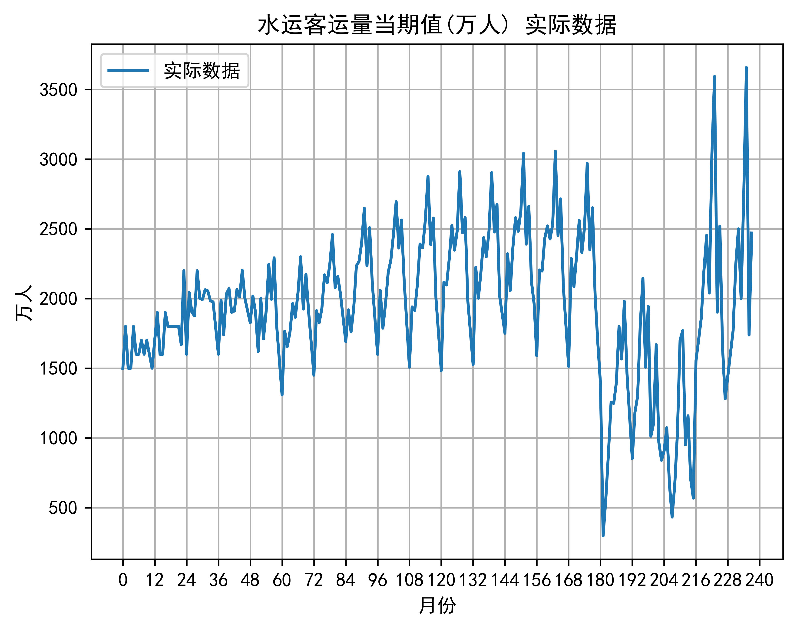
预测前景
构建 SARIMA 模型的拟合过程使用了 Python 包 pmdarima 中的 auto_arima 函数自动确定参数最小化 AIC, 在提供的尝试范围内找到最好的 SARIMA 参数, 并返回可以生成预测项的模型, 用于绘制数据可视化时序图.
# 先让 auto_arima 找到模型最适合的参数.
ARIMA_CRITERION = "aic" # "aic"(default), "bic", "hqic", or "oob".
ARIMA_TEST = "kpss" # "adf", "kpss"(default), or "pp".
from pmdarima.arima import auto_arima
model = auto_arima(data, start_p=1, start_q=1, max_p=12, max_q=12, start_P=0, start_Q=0, max_P=6, max_Q=6,
max_order=None, seasonal=True, m=12, information_criterion=ARIMA_CRITERION, test=ARIMA_TEST,
stepwise=True, trace=True, error_action='ignore', suppress_warnings=True)
print(model.summary())
# 再使用 matplotlib 绘制实际数据及未来预测值图.
PREDICT_LENGTH = 75
CONFIDENCE = .25
pre, conf = model.predict(n_periods=PREDICT_LENGTH, alpha=1 - CONFIDENCE, return_conf_int=True)
predicted_x_axis_data = [original_x_axis_data[-1]] + list(range(len(data), len(data) + PREDICT_LENGTH))
predicted_y_axis_data = [original_y_axis_data[-1]] + list(pre)
predicted_y_axis_data_min = [original_y_axis_data[-1]] + list(conf[:, 0])
predicted_y_axis_data_max = [original_y_axis_data[-1]] + list(conf[:, 1])
plt.figure(dpi=600)
plt.plot(original_x_axis_data, original_y_axis_data, label="实际数据")
plt.plot(predicted_x_axis_data, predicted_y_axis_data, label="未来预测值")
plt.fill_between(predicted_x_axis_data, predicted_y_axis_data_min, predicted_y_axis_data_max,
alpha=.15, label=f"{CONFIDENCE * 100:.2f}% 置信区间")
plt.xlabel("月份")
plt.ylabel(predict_name.split("(")[-1].strip(")"))
ax = plt.gca()
ax.xaxis.set_major_locator(plt.MultipleLocator(24))
plt.grid()
plt.legend(loc="upper left")
plt.title(f"{predict_name} 实际数据及未来预测值")
plt.show()
程序段生成的图表如下, 蓝色折线表示条目实际数据, 橙色折线表示从已有数据末尾开始预测的预测值, 橙色折线附近的灰色阴影表示预测数据的 $25.00\%$ 置信区间. 对于已有数据趋势较明显的数据, 模型拟合效果一般较好, 预测数据能在周期内表现出较好的季节性波动.
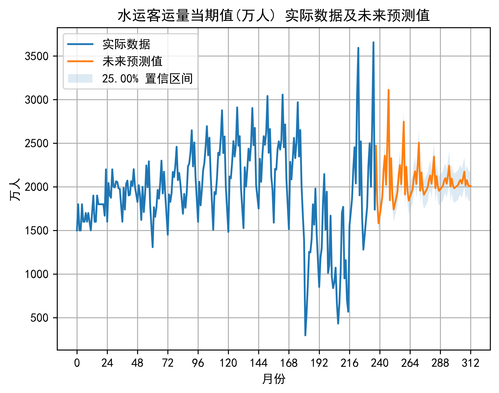
预测无新冠走向
预测无新冠走向与预测前景的流程基本相同, 只需要修改提供给 auto_arima 的数据量, 重新确定最佳参数, 并基于无新冠走向模型预测得到的数据绘图.
# 先让 auto_arima 找到模型最适合的参数.
data = data[:180]
nocovid_model = auto_arima(data, start_p=1, start_q=1, max_p=12, max_q=12, start_P=0, start_Q=0, max_P=6, max_Q=6,
max_order=None, seasonal=True, m=12, information_criterion=ARIMA_CRITERION, test=ARIMA_TEST,
stepwise=True, trace=True, error_action='ignore', suppress_warnings=True)
print(nocovid_model.summary())
# 再使用 matplotlib 绘制实际数据及无新冠预测值图.
PREDICT_LENGTH_NOCOVID = 61
pre, conf = nocovid_model.predict(n_periods=PREDICT_LENGTH_NOCOVID, alpha=1 - CONFIDENCE, return_conf_int=True)
predicted_nocovid_x_axis_data = [original_x_axis_data[179]] + list(range(len(data), len(data) + PREDICT_LENGTH_NOCOVID))
predicted_nocovid_y_axis_data = [original_y_axis_data[179]] + list(pre)
plt.figure(dpi=600)
plt.plot(original_x_axis_data[:180], original_y_axis_data[:180], label="实际数据")
plt.plot(original_x_axis_data[179:], original_y_axis_data[179:], "C0-", alpha=.25)
plt.plot(predicted_nocovid_x_axis_data, predicted_nocovid_y_axis_data, "C2-", label="无新冠预测值")
plt.xlabel("月份")
plt.ylabel(predict_name.split("(")[-1].strip(")"))
ax = plt.gca()
ax.xaxis.set_major_locator(plt.MultipleLocator(24))
plt.grid()
plt.legend(loc="upper left")
plt.title(f"{predict_name} 实际数据及无新冠预测值")
plt.show()
程序段生成的图表如下, 蓝色折线表示条目实际数据, 绿色折线表示从 2019 年 1 月开始预测的预测值 (即无新冠预测值), 与绿色折线共用横坐标区间的蓝色半透明折线仍表示实际数据, 用于可视化疫情对对应条目数据的影响. 大多数条目在第 180 月份 (约 2020 年 1 月, 受疫情影响) 处实际数据与无新冠预测值开始表现出较大差距, 体现疫情对交通运输业的影响. 一部分条目的差距会随时间减小, 实际数据逐渐赶上无新冠预测值的水平; 另有一部分条目呈现出时间上的后滞性, 即实际数据与无新冠预测值的增速趋势大致相同, 但由于实际数据在第 180 月份后一段时间的增长停滞, 造成了较为整齐的差距.
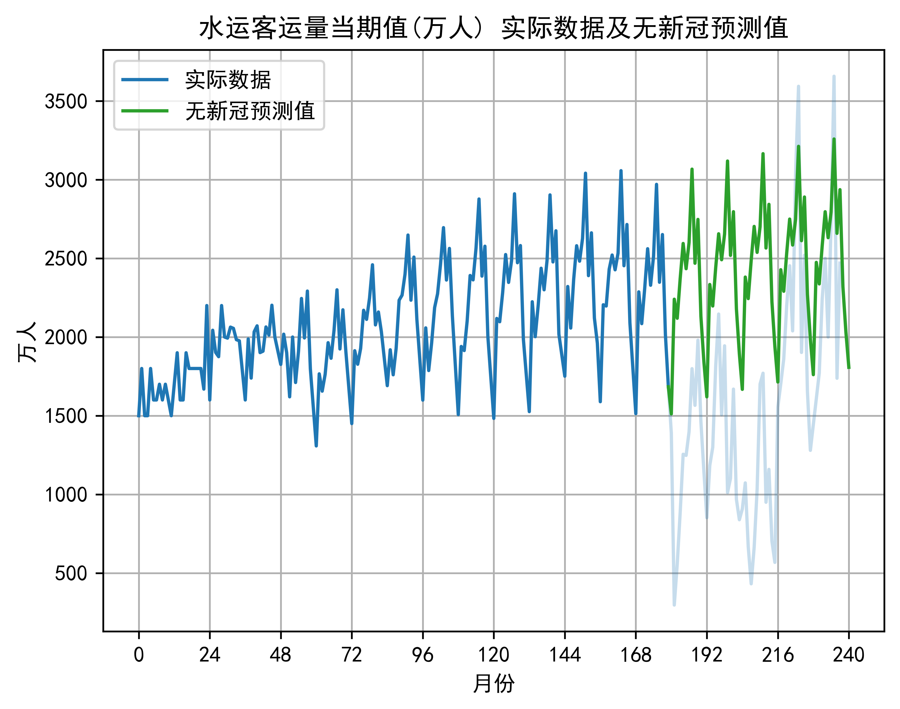
样例分析
公路货运量当期值
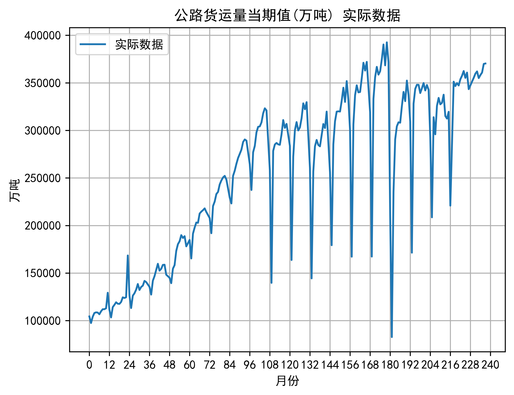
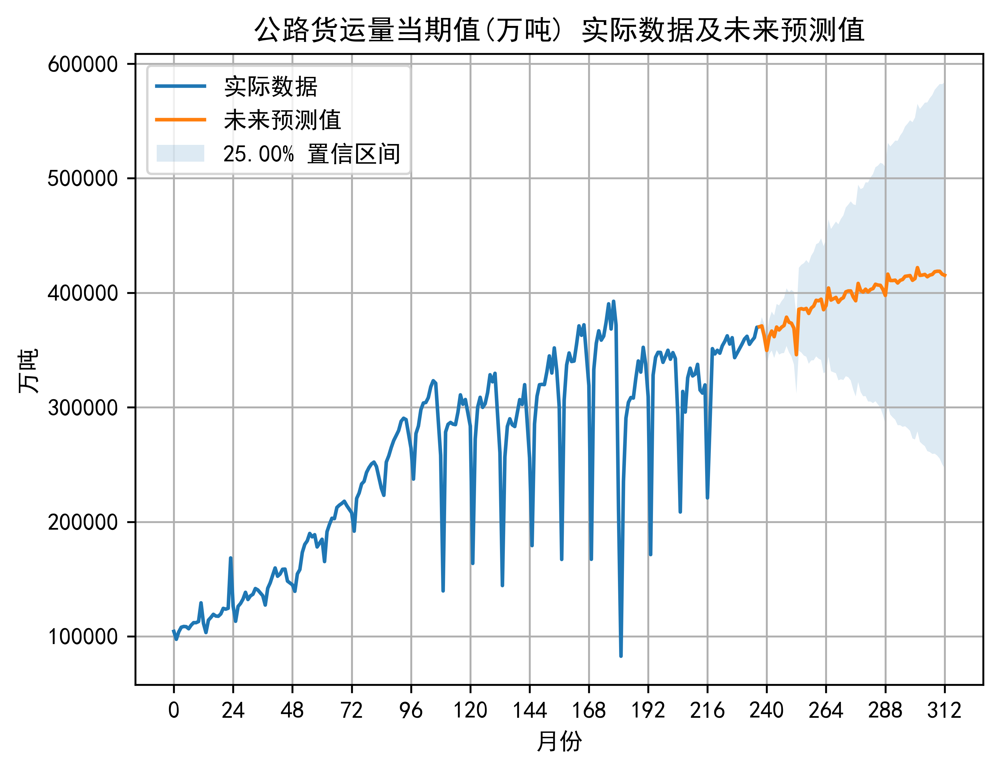
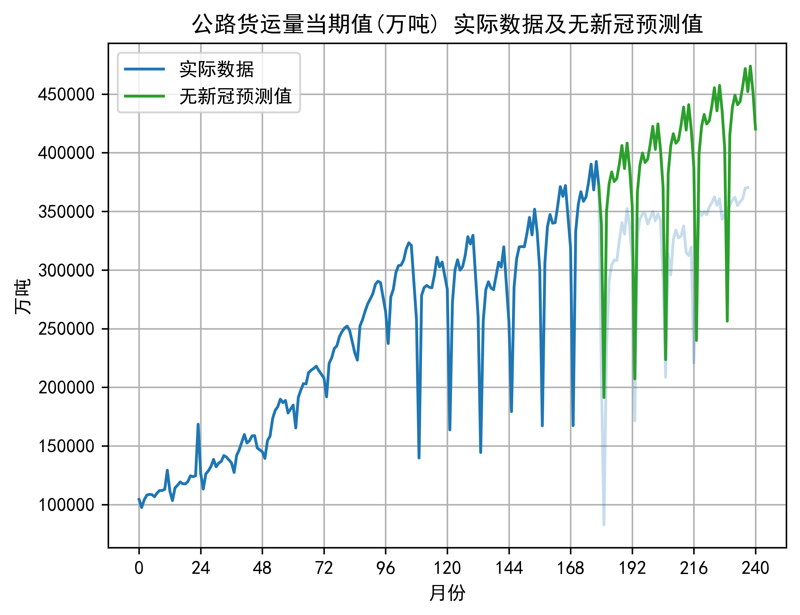
公路货运量当期值的三张图表展示了公路货运量在不同情境下的变化趋势, 且数据既在一年中呈现出明显的波动趋势, 整体又在长期表现出上升趋势, 是具有明显季节性和趋势的时间序列. 年初货运量处于较低水平, 随后逐步上升, 并在年中达到峰值, 而后又逐渐下降. 这种波动规律很可能与经济活动的季节性变化紧密相关, 例如在
在实际数据及未来预测值图中, 未来预测值反映出公路货运量在未来将继续维持一定的波动状态, 但总体上可能会在一个相对稳定的区间内波动. 这种预测为物流规划和相关决策提供了一定的参考依据. 实际数据及无新冠预测值图呈现了在未受新冠疫情影响情况下公路货运量的预期走势. 对比实际数据与无新冠预测值可以发现, 新冠疫情对公路货运量产生了重大影响. 在某些时间段内, 实际数据明显低于无新冠预测值, 这充分表明疫情对公路货运行业造成了冲击, 导致公路货运量减少.
使用 auto_arima 自动选择 SARIMA 模型参数: 未来预测值的模型为 ARIMA(0,1,0)(4,0,0)[12], 没有自回归项和移动平均项, 但有一阶差分, 季节性自回归阶数为 $4$, 没有季节性移动平均项, 季节周期为 $12$, 对应 $12$ 个月; 无新冠预测值的模型为 SARIMAX(1, 0, 1)x(0, 1, 1, 12), 自回归项和移动平均项均为一阶, 没有差分项, 没有季节性自回归项, 但有一阶季节性移动平均和一阶季节性差分. 两个模型拟合后的 AIC
综上所述, 公路货运量虽具有显著的季节性波动特征, 且无新冠预测值表现出公路运输量当期值受新冠疫情影响较大, 但未来预测值模型预测效果差于无新冠预测值模型, 仍需要在考虑此类外部因素时进一步优化.
货物周转量当期值
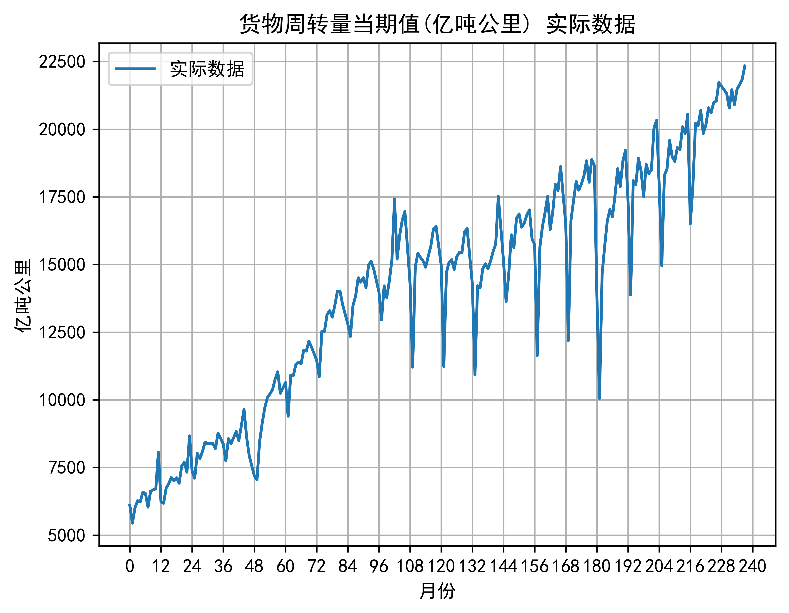
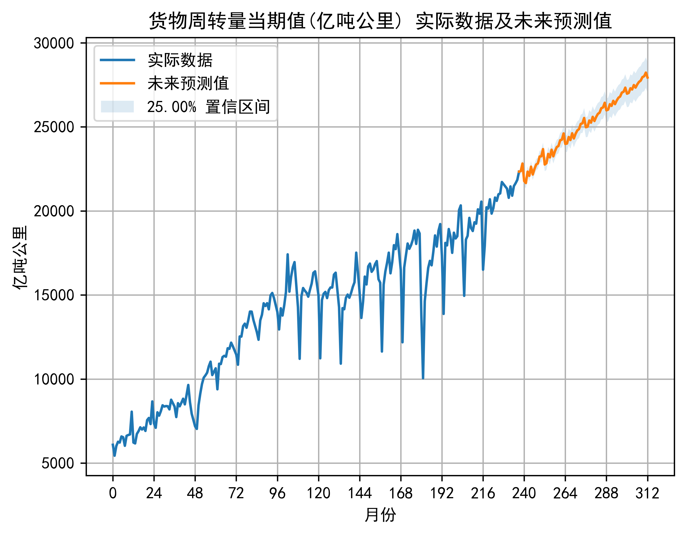
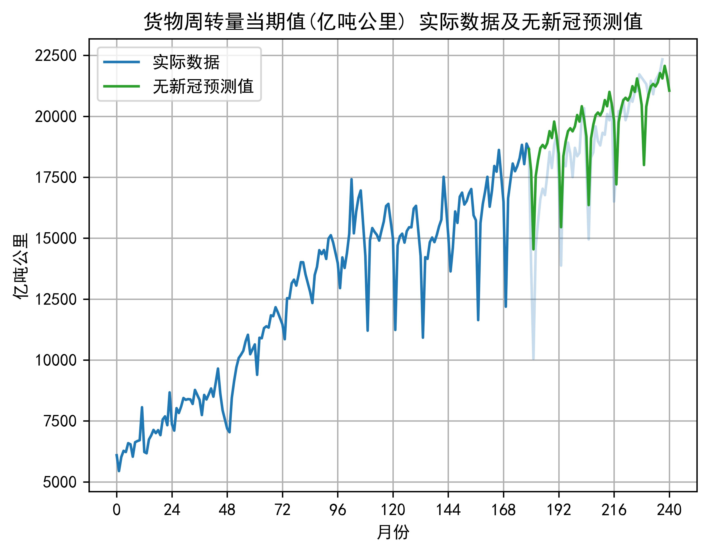
货物周转量当期值的多幅图表为我们呈现了其在不同状况下的变化态势. 在年度周期方面, 它和公路货运量有相似之处, 数据呈现出明显的波动特性. 年初时货物周转量处于相对低位, 而后随着时间的推移逐步上扬, 在年中附近达到一个较高的峰值, 之后又渐渐回落. 这种波动模式极有可能与经济活动的季节性变动密切相关. 例如在一些特定的商业旺季或者重大促销活动期间, 如
实际数据及未来预测值图表明货物周转量在后续时期会继续维持一定程度的波动情形, 并且整体上大致会在某一相对稳定的区间范围内变动. 这一预测结果能够在一定程度上为物流运输企业的资源调配
在模型构建上, 采用 auto_arima 自动选择 SARIMA 模型参数, 其未来预测值模型 SARIMAX(2, 1, 1)x(3, 0, [], 12) 和无新冠预测值模型 SARIMAX(4, 1, 0)x(1, 0, [1], 12) 体现出各自的结构特点, 且拟合后的 AIC
铁路周转量当期值
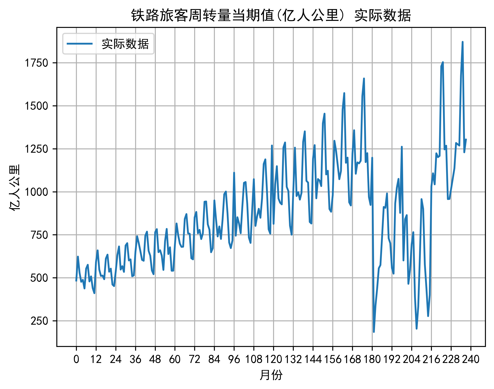
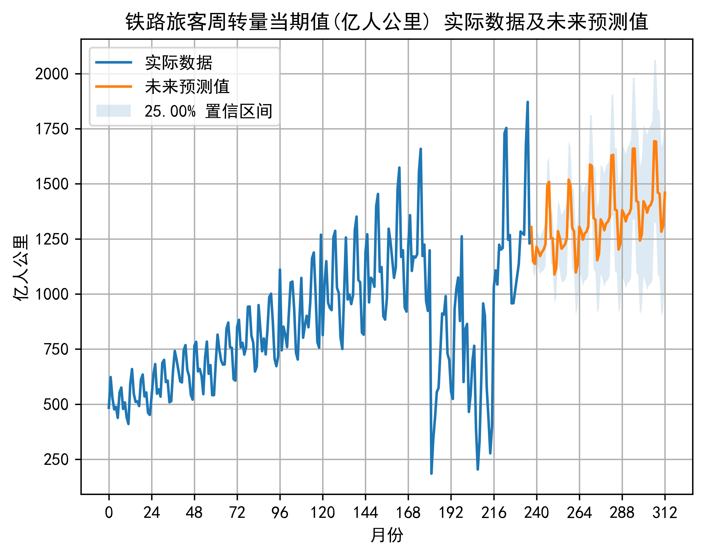
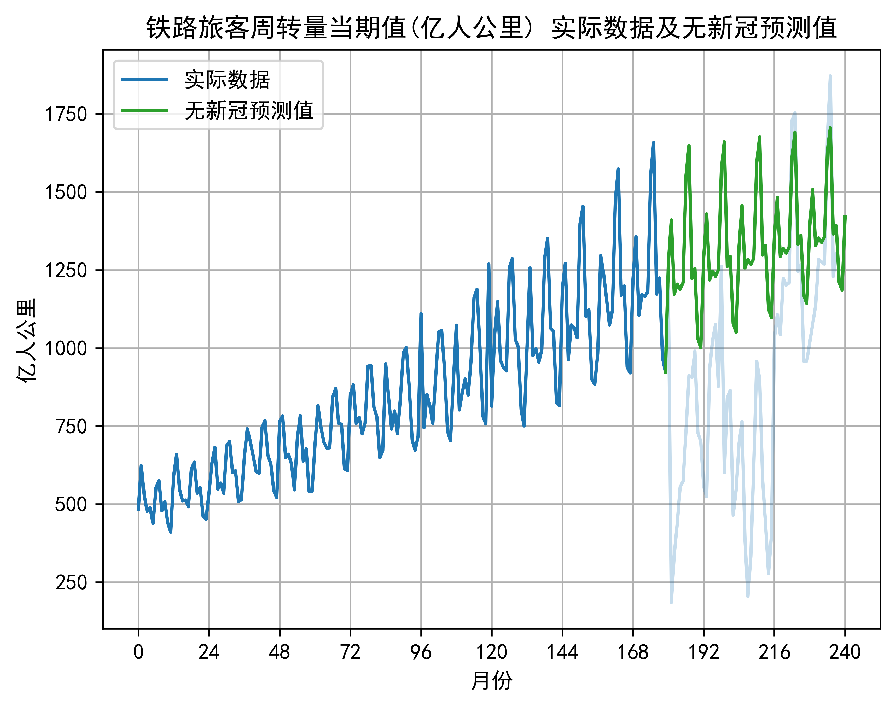
铁路旅客周转量当期值的相关图表全面地展现了其在多种情境下的变化轨迹. 就年度循环而言, 其与诸多交通运输类数据有着共通之处, 呈现出显著的波动特征. 年初之际
实际数据及未来预测值图显示铁路旅客周转量在后续的时间里将会继续保持一定的波动状态, 且整体上大致会在相对稳定的区间中变动. 这一预测成果能够在一定范围内为铁路运营部门的运力调配
在模型构建的环节中, 当采用 auto_arima 自动确定 SARIMA 模型参数时, 所得到的未来预测值模型 SARIMAX(2, 1, 0)x(3, 0, [1], 12) 以及无新冠预测值模型 SARIMAX(6, 1, 0)x(1, 0, [1], 12) 均展现出独有的结构特质. 其中, 拟合后的 AIC
总结与展望
本研究致力于国内新冠疫情前后交通运输数据的分析与前景预测, 在数据处理与模型应用方面进行了深入探索. 数据采集自 2005 年 1 月至 2024 年 10 月近 20 年的全国范围, 共计 238 个月份的数据, 来源于国家统计局官方渠道, 数据权威性得以保障. 在数据处理环节, 对原始数据进行了细致梳理, 针对 pmdarima 中的 auto_arima 函数, 自动确定 SARIMA 模型的参数, 以 AIC 最小化为目标, 在设定的参数范围内寻找最优组合, 从而生成预测项并绘制出可视化的时序图. 在预测前景和无新冠走向的分析中, 清晰地展现了疫情对交通运输数据的影响. 样例分析分别针对公路货运量当期值
本研究在取得一定成果的同时, 也存在一些有待改进之处. 在数据方面, 虽然数据来源可靠, 但所收集的影响因素相对有限, 未充分涵盖突发自然灾害
参考文献
[1] 令彦荣.浅析新冠肺炎疫情对交通运输行业的影响[J].中国物流与采购,2021,(10):57.
[2] 万莉.新冠肺炎疫情对私家车拥有者出行行为的影响研究[D].华南理工大学,2021.
[3] 周健.新冠肺炎疫情对交通运输行业的影响及政策建议[J].交通运输研究,2020,6(01):13-18.
[4] 胡姬, 凌晨, 王家军. 新冠肺炎疫情对地铁运营的影响分析与建议[J]. 现代城市轨道交通,2020(07):109-114.
[5] 刘春义. 新冠肺炎疫情对经济社会的影响和地面公共交通的前景分析[J]. 人民公交,2020(04):54-57.
[6] Ekici Ü. Measuring Covid-19 effect on rail passenger flow with geographical region based trip generation models[C]//Proceedings of the Institution of Civil Engineers-Transport. Emerald Publishing Limited, 2024: 1-31.
[7] Murat Y S, Cakici Z. Analysis of the COVID-19 pandemic on preferences of transport modes[C]//Proceedings of the Institution of Civil Engineers-Transport. Emerald Publishing Limited, 2024: 1-31.
[8] 李锦源.基于实时数据的短时交通流预测模型研究[D].北京化工大学,2023.
[9] 杨娟.时间序列分析方法在杭州市中小学生症状监测中的应用[D].浙江大学,2011.
[10] 杨慧云,李印凤,段满珍,等.基于SARIMA-LSTM组合的机场起降量短时预测方法[J].指挥信息系统与技术,2024,15(05):29-35.
[11] 吴静茹.武汉市旅游季节性分析及预测[J].经济学,2019,(3):39-42.
[12] 孙根年,甘晓蕊.后疫情时代中国典型省区旅游业恢复及预测——以琼
[13] 覃频频,陆凯平,牙韩高.旅游需求预测模型研究[J].铁道运输与经济,2006,(08):73-75.
[14] 赵婷婷,韩雅杰,杨梦楠,任德华,陈亚瑞,王嫄,刘建征.基于机器学习的时序数据预测方法研究综述[J].天津科技大学学报,2021,36(5):1-9.